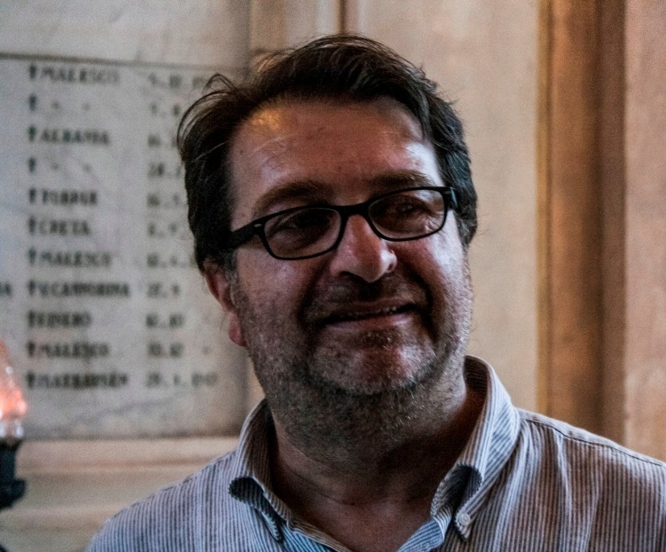

Adriano Alberti Giani
Musicista, nato a Domodossola nel 1966, ha studiato organo con Alberto Marazza, pianoforte con Maria Luisa Rossi Oddini, gregoriano e musica sacra con don Aldo Pernat. Dal 1980 è organista del Santuario del SS. Crocifisso e dal 1983 al 2005 ha diretto la Corale di Calice. Ha fondato la Camerata Strumentale di S. Quirico (1989), la Schola Gregoriana (1995) e il Convivio Rinascimentale (1997). Nel 2005 ha creato il Coro Filarmonico del VCO; nel 2021 è tra i fondatori di Polimnia Arts Company.